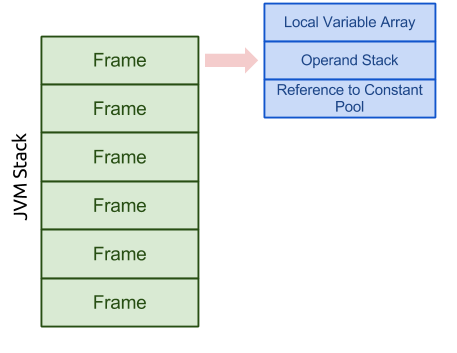

Các khái niệm
Trong bài này, ta chỉ đi sâu vào phân tích các khái niệm trong Concurrency. Đây là những khái niệm chung, và sau này ta sẽ căn cứ vào nó để mapping sang Java cho hợp lý.
Concurrency là gì
Concurrency - (Đồng thời) là gì?
Concurrency computing là khả năng chạy một số chương trình hoặc một số phần của chương trình song song. Hay nói ngắn gọn hơn, đó là quá trình xử lý được nhiều nhiệm vụ diễn ra trong cùng một khoảng thời gian.
Đối lập với nó là tuần tự - Sequentially computing. Sequentially tức là quá trình xử lý chỉ giải quyết 1 nhiệm vụ, step by step, khi nó kết thúc, thì mới chạy sang cái tiếp theo.
Một khái niệm khác liên quan đến concurrency đó là Parallel computing- tính toán song song. Parallel cũng như Concurrency, có thể xử lý nhiều tác vụ trong một thời điểm. Tuy nhiên, giữa chúng có một sự khác biệt rất rõ ràng. Trong parallel, hai(hay nhiều) lệnh thực thi cho hai nhiệm vụ khác nhau, hoàn toàn độc lập với nhau và có thể xảy ra vào cùng một thời điểm, trên hai máy tính hay bộ xử lý riêng biệt. Trong khi đó, trong Concurrency, các lệnh diễn ra xen kẽ nhau, trên cùng một bộ vi xử lý đơn lõi trên cùng một máy tính.
Ví dụ cho dễ hiểu, Concurrency là việc bạn có 1 cái máy tính, vừa chơi game, vừa nghe nhạc, Parallel là bạn có 2 cái máy tính, một cái chơi game, một cái nghe nhạc.
| Sequentially | Concurrency | Parallel | |
|---|---|---|---|
| Bản chất | Các lệnh được thực thi tuần tự, lần lượt cái này đến cái kia | Các lệnh được thực thi xen kẽ nhau | Các lệnh được thực thi song song và độc lập với nhau. |
Process vs Thread
Tổng quan
Trong concurrency programming, có 2 đơn vị thực thi cơ bản, Process (tiến trình) và Thread (luồng).
Một hệ thống bình thường thì gồm rất nhiều process và thread. Điều này đúng với các CPU single core.
Do đó, CHỈ CÓ DUY NHẤT MỘT LUỒNG ĐƯỢC THỰC THI TẠI BẤT CỨ THỜI ĐIỂM NÀO.
Thời gian xử lý cho các single core được chia sẻ với các processes và threads thông qua tính năng của OS và được gọi là time slicing.
Và cái khái niệm này càng đuộc phổ biến hơn cho các hệ thống máy tính mà có nhiều processes hoặc có một processes với multiple execution core. Điều này giúp tăng cường khả năng của hệ thống cho việc thực thi concurrency processes or threads, nhưng CONCURRENCY CÓ THỂ NGAY CẢ TRÊN CÁC HỆ THỐNG ĐƠN GIẢN - KHÔNG CÓ NHIỀU BỘ XỬ LÝ HOẶC LÕI THỰC THI.
Process
Một process là một môi trường khép kín. Khép kín ở đây có nghĩa nó có một tài nguyên run-time hoàn chỉnh, đặc biệt, mỗi process sẽ có không gian bộ nhớ của riêng nó.
Nói cách khác, một process được xem như là một application chạy độc lập, tách biệt với các process khác. Nó không thể truy cập tới dữ liệu bên trong các process đó.
Tài nguyên của một process (memory và cpu time) được chia sẻ thông qua hệ điều hành.
Các process thường được xem như là một Program hoặc Application.
Process in Java
Thử chạy một ứng dụng lên và Ctrl + Alt + Del mà xem, ta sẽ thấy chỉ có duy nhất 1 process với tên là java đang chạy. Stop nó cái và mọi thứ đi luôn.
Thread
Tổng quan
Thread là con của một process.
Theo khái niệm trong Java doc, thread là một lightweight processes. Cả processes và thread đều cung cấp một môi trường thực thi, tuy nhiên việc create new thread nó sẽ yêu cầu ít resource hơn là một process.
Mỗi thread chỉ tồn tại trong một tiến trình - Mỗi tiến trình có ít nhất một process đang chạy hay nói cách khác, khi ta start 1 process, thì đó là lúc ta open 1 thread rồi.
Khác biệt với process không chia sẻ tài nguyên cho nhau, Thread chia sẻ tài nguyên với các thread khác bên trong process mà nó chạy, bao gồm cả memory và open files. Nó giúp tăng cường khả năng của hệ thống, nhưng có thể kéo theo một vấn đề rất nguy hiểm, Comunication giữa các Thread.
Mỗi thread có một call stack - cái này ko biết nên dịch là gì nên giữ nguyên, nhưng có thể được truy cập dữ liệu được chia sẻ từ các thread khác trong cùng một process.
Mỗi thread có một memory cache riêng của nó. Khi 1 thread đọc 1 dữ liệu được chia sẻ, nó sẽ lưu dữ liệu này trong memory cache của riêng nó. Một thread có thể đọc lại các dữ liệu được chia sẻ đó.
Thread in Java
Multiple thread là một trong những tính năng cần thiết của Java platform.
Một ứng dụng Java được chạy theo mặc định trong một process. Trong một java application, ta có thể làm việc với nhiều thread để đạt được parallel processing hoặc asynchronous behavior.
Khi ta bắt đầu chạy 1 application, ta run 1 process với 1 thread (main thread) ở bên trong nó, và tùy từng tình huống mà ta có thể tạo thêm các thread khác để hỗ trợ công việc.
Nhược điểm của Java Application
Rõ ràng mỗi Java platform chỉ có 1 process. Vì vậy, đôi lúc ta muốn start thêm 1 process nữa thì rất khó khăn. Nó không giống như Node, có thể start lên bất cứ lúc nào.
Multiple thread nhưng lại phụ thuộc vào process. Process lại phụ thuộc vào tài nguyên mà hệ thống cấp cho lúc đầu. Vì vậy khi một ứng dụng java đã quá nặng, ta không thể xin thêm memory cho nó, hay xin thêm tài nguyên CPU để xử lý, cũng ko thể tạo thêm process khác. Trong khi đó, đối với Node js, cứ mỗi cái node chạy thì lại có thêm 1 process được bật.
Chính vì việc ban đầu đã bị giới hạn dung lượng, nên khi 1 process có quá nhiều thread và những thread đó sử dụng tài nguyên khác nhau, vô tình khiến cho out of memory.
Những ưu điểm của Java
Java hỗ trợ Parallel, Concurrency với Multiple thread. Đó là ưu điểm của nó
Việc sử dụng chung 1 process giúp các thread trong java chia sẻ tài nguyên nhanh hơn.
Java runs trên 1 core hay multiple core của System ? Java chạy trên multiple core, và được test là có thể chạy trên hundred core với thousand processes.
Java cũng có thể "pinched" - gim xuống một nhóm các CPU core bất kì, miễn là OS hỗ trợ. Khi chạy 1 app java, ta có thể mở task manager, click chuột phải và assign nó sang cho 1 core nào đó. Ngày xưa win 7 đc mà h win 10 bó tay rồi.
Java - JVM
Java Virtual Machine/

Quay lại với mô hình JVM của Java, ở đây ta sẽ nhìn rõ hơn để xem hoạt động của các thread như thế nào.
Cùng nhìn vào Run-time Data Areas.
Trong mô hình này, ta thấy Run-time area được chia thành các thành phần như sau:
- Method Area (SHARE)- Chia sẻ các method của Class
- Heap Area (SHARE)- Chia sẻ dũ liệu của các Object
- Thread areas (NOT-SHARE)- Lưu trữ thông tin của các thread đang chạy.
- PC Register (NOT-SHARE)- Chúng ta đều biết processor nó không xử lý các task 1 cách liên tục mà nhảy qua nhảy lại giữa các lệnh được push vào Stack. Java cũng vậy, PC Register là nơi mà các thread lưu trữ stack các lệnh của nó, để processor biết mà xử lý.
- Native Method Stack (NOT-SHARE).

Từ đó ta phân thành 2 loại sau cũng được.
Data areas for each individual thread (NOT SHARED)
Cái này chỉ chứa thông tin của mỗi thread mà thôi. Nó chứa program counter register. JVM stack và Native Method Stack.
Nó được tạo khi mà 1 thread được bật
.Program Counter Register: it is used to control each execution of each thread.
JVM Stack: It contains frames which is demonstrated in the diagram below.
Native Method Stack: it is used to support native methods, i.e., non-Java language methods.
Date Areas shared by All Threads
All thread chia sẻ chung một Heap và Method Area.
Heap - it is the area that we most frequently deal with. It stores arrays and objects, created when JVM starts up. Garbage Collection works in this area.
Method Area - it stores run-time constant pool, field and method data, and methods and constructors code
Runtime Constant Pool: It is a per-class or per-interface run-time representation of the constant_pool table in a class file. It contains several kinds of constants, ranging from numeric literals known at compile-time to method and field references that must be resolved at run-time.
Stack contains Frames, and a frame is pushed to the stack when a method is invoked. A frame contains local variable array, Operand Stack, Reference to Constant Pool.
Referene
Xem thêm về Java JVM tại đây.
2.5. Run-Time Data AreasThe Java Virtual Machine defines various run-time data areas that are used during execution of a program. Some of these data areas are created on Java Virtual Machine start-up and are destroyed only when the Java Virtual Machine exits. Other data areas are per thread. Per-thread data areas are created when a thread is created and destroyed when the thread exits.
2.5.1. The pc Register
The Java Virtual Machine can support many threads of execution at once (JLS §17). Each Java Virtual Machine thread has its own pc (program counter) register. At any point, each Java Virtual Machine thread is executing the code of a single method, namely the current method (§2.6) for that thread. If that method is not native, the pc register contains the address of the Java Virtual Machine instruction currently being executed. If the method currently being executed by the thread is native, the value of the Java Virtual Machine's pc register is undefined. The Java Virtual Machine's pc register is wide enough to hold a returnAddress or a native pointer on the specific platform.
2.5.2. Java Virtual Machine Stacks
Each Java Virtual Machine thread has a private Java Virtual Machine stack, created at the same time as the thread. A Java Virtual Machine stack stores frames (§2.6). A Java Virtual Machine stack is analogous to the stack of a conventional language such as C: it holds local variables and partial results, and plays a part in method invocation and return. Because the Java Virtual Machine stack is never manipulated directly except to push and pop frames, frames may be heap allocated. The memory for a Java Virtual Machine stack does not need to be contiguous.
In The Java Virtual Machine Specification, First Edition, the Java Virtual Machine stack was known as the Java stack.
This specification permits Java Virtual Machine stacks either to be of a fixed size or to dynamically expand and contract as required by the computation. If the Java Virtual Machine stacks are of a fixed size, the size of each Java Virtual Machine stack may be chosen independently when that stack is created.
A Java Virtual Machine implementation may provide the programmer or the user control over the initial size of Java Virtual Machine stacks, as well as, in the case of dynamically expanding or contracting Java Virtual Machine stacks, control over the maximum and minimum sizes.
The following exceptional conditions are associated with Java Virtual Machine stacks:
If the computation in a thread requires a larger Java Virtual Machine stack than is permitted, the Java Virtual Machine throws a StackOverflowError.
If Java Virtual Machine stacks can be dynamically expanded, and expansion is attempted but insufficient memory can be made available to effect the expansion, or if insufficient memory can be made available to create the initial Java Virtual Machine stack for a new thread, the Java Virtual Machine throws an OutOfMemoryError.
2.5.3. Heap
The Java Virtual Machine has a heap that is shared among all Java Virtual Machine threads. The heap is the run-time data area from which memory for all class instances and arrays is allocated.
The heap is created on virtual machine start-up. Heap storage for objects is reclaimed by an automatic storage management system (known as a garbage collector); objects are never explicitly deallocated. The Java Virtual Machine assumes no particular type of automatic storage management system, and the storage management technique may be chosen according to the implementor's system requirements. The heap may be of a fixed size or may be expanded as required by the computation and may be contracted if a larger heap becomes unnecessary. The memory for the heap does not need to be contiguous.
A Java Virtual Machine implementation may provide the programmer or the user control over the initial size of the heap, as well as, if the heap can be dynamically expanded or contracted, control over the maximum and minimum heap size.
The following exceptional condition is associated with the heap:
If a computation requires more heap than can be made available by the automatic storage management system, the Java Virtual Machine throws an OutOfMemoryError.
2.5.4. Method Area
The Java Virtual Machine has a method area that is shared among all Java Virtual Machine threads. The method area is analogous to the storage area for compiled code of a conventional language or analogous to the "text" segment in an operating system process. It stores per-class structures such as the run-time constant pool, field and method data, and the code for methods and constructors, including the special methods (§2.9) used in class and instance initialization and interface initialization.
The method area is created on virtual machine start-up. Although the method area is logically part of the heap, simple implementations may choose not to either garbage collect or compact it. This version of the Java Virtual Machine specification does not mandate the location of the method area or the policies used to manage compiled code. The method area may be of a fixed size or may be expanded as required by the computation and may be contracted if a larger method area becomes unnecessary. The memory for the method area does not need to be contiguous.
A Java Virtual Machine implementation may provide the programmer or the user control over the initial size of the method area, as well as, in the case of a varying-size method area, control over the maximum and minimum method area size.
The following exceptional condition is associated with the method area:
If memory in the method area cannot be made available to satisfy an allocation request, the Java Virtual Machine throws an OutOfMemoryError.
2.5.5. Run-Time Constant Pool
A run-time constant pool is a per-class or per-interface run-time representation of the constant_pool table in a class file (§4.4). It contains several kinds of constants, ranging from numeric literals known at compile-time to method and field references that must be resolved at run-time. The run-time constant pool serves a function similar to that of a symbol table for a conventional programming language, although it contains a wider range of data than a typical symbol table.
Each run-time constant pool is allocated from the Java Virtual Machine's method area (§2.5.4). The run-time constant pool for a class or interface is constructed when the class or interface is created (§5.3) by the Java Virtual Machine.
The following exceptional condition is associated with the construction of the run-time constant pool for a class or interface:
When creating a class or interface, if the construction of the run-time constant pool requires more memory than can be made available in the method area of the Java Virtual Machine, the Java Virtual Machine throws an OutOfMemoryError.
See §5 for information about the construction of the run-time constant pool.
2.5.6. Native Method Stacks
An implementation of the Java Virtual Machine may use conventional stacks, colloquially called "C stacks," to support native methods (methods written in a language other than the Java programming language). Native method stacks may also be used by the implementation of an interpreter for the Java Virtual Machine's instruction set in a language such as C. Java Virtual Machine implementations that cannot load native methods and that do not themselves rely on conventional stacks need not supply native method stacks. If supplied, native method stacks are typically allocated per thread when each thread is created.
This specification permits native method stacks either to be of a fixed size or to dynamically expand and contract as required by the computation. If the native method stacks are of a fixed size, the size of each native method stack may be chosen independently when that stack is created.
A Java Virtual Machine implementation may provide the programmer or the user control over the initial size of the native method stacks, as well as, in the case of varying-size native method stacks, control over the maximum and minimum method stack sizes.
The following exceptional conditions are associated with native method stacks:
If the computation in a thread requires a larger native method stack than is permitted, the Java Virtual Machine throws a StackOverflowError.
If native method stacks can be dynamically expanded and native method stack expansion is attempted but insufficient memory can be made available, or if insufficient memory can be made available to create the initial native method stack for a new thread, the Java Virtual Machine throws an OutOfMemoryError.